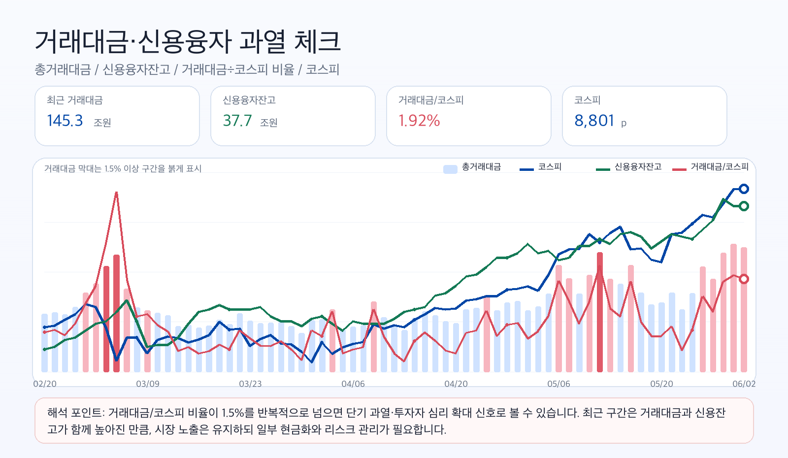
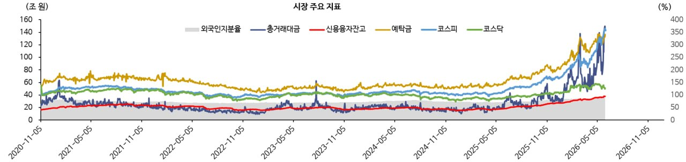
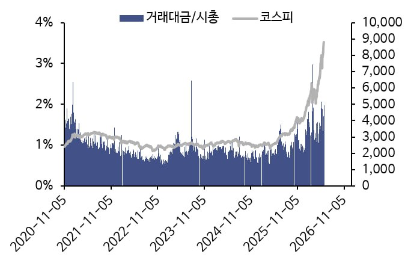
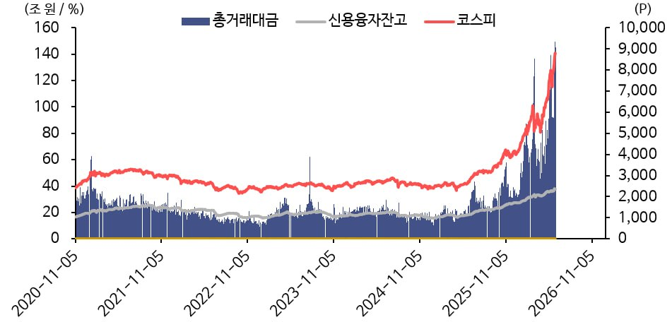

서인원 드림
Market Letter
꼭지는 맞출 수 없습니다
많이 오른 시장일수록 전부 팔 필요도, 전부 들고 갈 필요도 없습니다. 시장에 남되, 만족할 수 있는 수익은 일부 현실화해야 할 때입니다.
안녕하세요.
서인원입니다.
지난 5월 레터에서는 한국시장이 부담스럽지만, 그렇다고 시장을 완전히 외면해서는 안 된다고 말씀드렸습니다.
실제로 5월 시장은 매우 강했습니다. 특히 코스피와 미국 기술주 중심의 상승은 단순한 반등이라기보다, 시장에 대한 시각 자체가 바뀌고 있는 것은 아닌지 생각하게 만드는 흐름이었습니다.
다만 6월에 들어오면서 시장의 분위기는 조금 달라졌습니다. 너무 빠르게 오른 만큼 차익실현 욕구가 커졌고, 금리와 환율, 미국 기술주 조정, 반도체 대형주 변동성 등이 겹치면서 시장도 흔들리고 있습니다.
5월 주요 지수 성과
먼저 5월 주요 지수 흐름을 간단히 보면 다음과 같습니다. 기준은 2026년 4월 말 종가 대비 5월 말 종가입니다.
| 지수 | 4월 말 | 5월 말 | 5월 수익률 |
|---|---|---|---|
| 코스피 | 6,598.87p | 8,476.15p | +28.45% |
| 코스닥 | 1,192.35p | 1,074.80p | -9.86% |
| S&P500 | 7,209.01p | 7,580.06p | +5.15% |
| 나스닥100 | 27,452.12p | 30,333.18p | +10.49% |
숫자로 보면 더 분명합니다. 5월은 시장 전체가 고르게 오른 장이라기보다는, 돈이 몰리는 곳과 소외되는 곳의 차이가 크게 벌어진 장이었습니다.
코스피는 대형주와 반도체 중심으로 강하게 올랐고, 나스닥100도 AI와 기술주 중심으로 좋은 흐름을 보였습니다. 반면 코스닥은 오히려 하락했습니다.
같은 주식시장 안에서도 체감 온도는 완전히 달랐습니다. 어떤 분들은 큰 수익을 보셨을 수 있고, 어떤 분들은 지수는 올랐는데 내 종목은 오르지 않는 답답함을 느끼셨을 수도 있습니다.
결국 지금 시장은 단순히 “주식이 좋다” 혹은 “많이 올랐으니 위험하다”로만 보기 어렵습니다. 지금은 시장을 할 것인지 말 것인지의 문제가 아니라, 무엇을 얼마나 들고 갈 것인지의 문제에 가깝습니다.
꼭지는 맞출 수 없습니다
시장이 많이 오르면 자연스럽게 꼭지를 맞히고 싶어집니다. 가장 높은 가격에서 팔고, 조정이 끝난 가장 낮은 가격에서 다시 사고 싶습니다.
하지만 현실적으로 그것은 거의 불가능합니다. 나중에 지나고 보면 꼭지는 너무 선명하게 보입니다. 하지만 그 순간에는 누구도 확신하기 어렵습니다.
지금 파는 것이 맞는지, 조금 더 기다리는 것이 맞는지, 아니면 조정이 시작된 것인지, 잠깐 흔들리고 다시 올라갈 것인지. 그때는 아무도 정확히 모릅니다.
그래서 저는 “꼭지를 맞추겠다”는 생각보다, 내가 만족할 수 있는 수익률인지를 먼저 봐야 한다고 생각합니다.
처음 투자할 때 기대했던 수익률을 충분히 달성했다면, 일부 수익실현은 잘못된 선택이 아닙니다. 팔고 나서 더 오를 수 있습니다. 그렇다고 해서 그 매도가 실패는 아닙니다.
만족할 수 있는 수익에서는 팔 수도 있어야 합니다
수익이 났다는 것은 좋은 일입니다. 하지만 수익은 계좌에 찍혀 있을 때와 실제로 일부 실현했을 때의 느낌이 다릅니다.
단기간에 크게 오른 자산은 특히 그렇습니다. 계좌상 수익이 커질수록 기분은 좋지만, 동시에 불안도 커집니다. 오를 때는 더 벌고 싶고, 빠질 때는 지키고 싶어집니다.
이때 일부라도 수익을 실현해두면 시장을 보는 마음이 훨씬 안정됩니다.
상승이 이어질 경우
남은 비중으로 시장 상승을 계속 함께 누릴 수 있습니다.
시장이 흔들릴 경우
이미 확보한 현금이 심리적 안전판이 되고, 다시 움직일 수 있는 여유가 됩니다.
중요한 것은 시장을 정확히 맞히는 것이 아닙니다. 무너지지 않는 구조를 만드는 것입니다.
까치밥을 남기는 마음도 필요합니다
시골 감나무를 보면 감을 전부 따지 않고 몇 개는 남겨둔다고 합니다. 그걸 까치밥이라고 부릅니다.
투자도 비슷한 면이 있습니다. 모든 수익을 내가 다 가져가겠다고 생각하면 마음이 급해집니다. 마지막 상승분까지 전부 먹겠다는 생각은 때로는 욕심이 됩니다.
어느 정도 만족할 수 있는 수익이 났다면 일부는 실현하고, 일부는 남겨둘 수 있습니다. 조금 더 오르는 몫은 시장에 남겨두는 것입니다. 내가 다 먹지 않아도 됩니다.
“남은 비중이 있으니 더 오르면 그것대로 좋고, 일부 수익은 이미 지켰다”로 생각할 수 있어야 합니다.
좋은 기업도 원래 흔들립니다
또 하나 말씀드리고 싶은 것은, 좋은 기업이라고 해서 주가가 계속 일직선으로 오르지는 않는다는 점입니다. 오히려 큰 상승을 만드는 기업일수록 중간중간 강한 조정을 겪는 경우가 많습니다.
20%, 30% 조정이 나왔다고 해서 반드시 기업의 가치가 훼손됐다고 볼 수는 없습니다.
중요한 것은 가격이 빠졌다는 사실 자체가 아니라, 내가 투자했던 이유가 훼손됐는지입니다.
기업의 실적 방향, 산업의 수요, 경쟁력, 현금흐름, 주주환원, 수급의 큰 방향이 그대로라면 조정은 버텨야 할 변동성일 수 있습니다. 반대로 주가는 덜 빠졌더라도 투자 아이디어 자체가 훼손됐다면 다시 봐야 합니다.
그래서 지금은 단순히 “얼마나 빠졌나”보다, 왜 샀고, 그 이유가 아직 유효한지를 점검해야 합니다.
시장을 완전히 떠나서는 안 됩니다.
다만 수익실현이 필요하다고 해서 시장에서 완전히 내려오자는 뜻은 아닙니다. 이 부분은 분명히 말씀드리고 싶습니다.
지금 시장은 단순히 많이 오른 시장일 수도 있지만, 동시에 한국시장에 대한 시각이 바뀌는 구간일 수도 있습니다.
외국인 자금이 다시 들어오고, 반도체와 대형주 중심으로 수급이 붙고, 한국 기업의 주주환원과 자본효율에 대한 관심이 커지고 있습니다.
특히 메모리 반도체와 AI 인프라 투자는 여전히 중요한 흐름입니다. AI 투자가 단순한 기대감이 아니라 실제 서버, 메모리, 전력, 인프라 투자로 이어지고 있다면 한국 대표 기업들의 이익 추정치도 계속 달라질 수 있습니다.
물론 단기 과열은 경계해야 합니다. 주가가 먼저 많이 오른 만큼 조정도 나올 수 있습니다. 하지만 “많이 올랐다”는 이유만으로 전부 현금화하면, 만약 시장의 구조가 바뀌는 구간에서 기회를 놓칠 수 있습니다.
6월에 더 중요해질 것들
단기 숏커버나 패시브성 매수 이후에도 실제 장기 자금이 들어오는지가 중요합니다.
중심 상승이 유지되는지, 실적 기대와 주가 사이의 간격이 과도하지 않은지 확인해야 합니다.
5월에는 코스피와 코스닥의 온도 차이가 컸습니다. 계속 벌어진다면 더 압축된 종목 선택이 필요합니다.
미국 금리와 원달러 환율이 불안해지면 많이 오른 성장주와 기술주는 변동성이 커질 수 있습니다.
제 생각은 이렇습니다
지금은 겁이 난다고 시장을 다 떠날 구간도 아니고, 분위기가 좋다고 아무거나 살 구간도 아닙니다. 오히려 더 냉정해야 합니다.
수익이 충분히 난 자산은 일부 팔 수 있어야 합니다. 그건 시장을 부정하는 것이 아니라, 수익을 지키는 행동입니다.
동시에 좋은 기업과 좋은 시장에 대한 노출은 유지해야 합니다. 그건 욕심이 아니라, 장기 자산증식의 기본입니다.
정확한 꼭지는 맞출 수 없습니다. 하지만 만족할 수 있는 수익률에서는 일부를 현실화할 수 있습니다. 그리고 남은 비중으로 시장에 계속 참여할 수 있습니다.
저는 이것이 지금 시장에서 가장 균형 잡힌 태도라고 생각합니다.
현금도 포지션입니다
현금은 단순히 쉬는 돈이 아닙니다. 현금은 기회가 왔을 때 다시 움직일 수 있게 해주는 전략 자산입니다.
시장이 더 오를 수 있다고 보더라도, 최소한의 현금성 자산은 필요합니다. 특히 최근처럼 단기간 상승폭이 컸던 시장에서는 더 그렇습니다.
개인별 상황에 따라 다르겠지만, 저는 여전히 최소 10% 이상의 현금성 자산은 유지하는 것이 좋다고 생각합니다. 이미 수익이 많이 난 자산이 있다면 일부 수익실현을 통해 현금을 만드는 것도 방법입니다.
참고자료: 이은택 위원 이그전 조정 체크
KB증권 이은택 위원은 최근 조정을 볼 때 이격도, MDD, 금리 변수를 함께 점검하고 있습니다.
강세장이 계속되더라도 이격 조정은 항상 나타날 수 있고, 코스피·코스닥·주요 AI 종목의 이격도를 보면 현재 위치와 종목별 차별화를 어느 정도 설명할 수 있다는 관점입니다.
또한 금리 상승은 중요한 변수지만, 특히 sticky CPI 3% 이상 + 미국 10년물 5% 이상 조합이 더 위협적인 구간이라고 설명합니다. 메모리 반도체 고점론과 스페이스X 상장 등도 시장이 확인해야 할 변수로 제시했습니다.
이후 글에서는 50일 이격도 130%를 넘긴 뒤 조정이 시작되었고, 50일 이동평균선을 고려한 지지선과 고점 대비 15~20% 조정 구간을 체크 포인트로 제시했습니다.
이는 단기 변동성을 무시하자는 뜻이 아니라, 조정이 왔을 때 감정적으로만 판단하지 말고 객관적인 기준으로 시장의 과열과 지지 구간을 함께 보자는 의미로 이해할 수 있습니다.
참고: [이그전] 증시 조정에 대해서: 주요 지수의 이격도 체크
참고: [이그전] 증시 조정에 대해서 #2: 끝인가 기회인가?
참고: [이그전] 증시 조정에 대해서 #3: 이격도와 MDD로 측정한 지지선
고객 참고용 글 모음
최근 시장 조정과 반도체·AI 인프라 흐름, 변동성 대응에 대해 참고하실 만한 글들입니다. 외부 글은 각 작성자의 개인 의견이며, 투자 판단 전 본인의 투자성향과 위험요인을 함께 확인하시기 바랍니다.
큰 수익의 기회가 커질수록 멘탈과 변동성 관리가 중요하다는 글입니다.
깡토: 초과수익의 기회, 초과스트레스의 시작
한국 대형주와 반도체 재평가 가능성을 투자자 관점에서 돌아본 글입니다.
포즈랑: 알아차리는 것-2
금리·밸류에이션·AI 인프라 투자를 함께 보며 반도체 조정을 해석한 글입니다.
김찰저: 고민과 포트폴리오
HPE·DELL 사례를 통해 AI 서버 수요가 일반 기업·정부로 확산되는 흐름을 정리한 글입니다.
농구천재: AI 수요의 확산
같은 종목도 왜 샀는지에 따라 대응이 달라져야 한다는 기준의 중요성을 다룬 글입니다.
깡토: 같은 삼성전자, 계좌마다 대응이 다릅니다
월요일 시장 방향을 맞히기보다, 정한 기준대로 대응하는 것이 중요하다는 글입니다.
깡토: 월요일 당장! 시장 예상~
단기 조정 속에서 투자 아이디어 훼손 여부와 포트폴리오 대응을 점검한 글입니다.
구빰: 빰반꿀!
금리·환율·반도체 차익실현과 계좌 변동성을 현실적으로 정리한 글입니다.
콤디티: 6월 2주 차 주식 생각
6월 조정 이후 Tech 랠리와 주요 이벤트를 점검한 글입니다.
파하: 260607 주말 투자 단상
좋은 기업도 상승 과정에서 20~30% 조정은 자연스럽게 나타날 수 있다는 글입니다.
필승: 좋은 기업도 원래 30%씩은 떨어진다
시장 과열과 투자자 심리 점검에 참고할 수 있는 신용잔고·예탁금 지표입니다.
Stockeasy: 시장 신용/예탁금 분석
최근 시장 흐름과 투자 아이디어를 함께 살펴볼 수 있는 참고 블로그입니다.
참고 블로그 바로가기
KEY CHART
시장 과열 여부와 투자자 심리를 함께 보기 위해 참고할 수 있는 신용잔고, 예탁금, 거래대금 관련 지표입니다.




시장을 떠나지 않되, 시장에 끌려다니지도 않는 것. 그 균형이 6월에는 더 중요해질 것 같습니다.
주식, 금융상품, 연금, 세무, 자산배분 관련 문의는 언제든 편하게 연락 주시기 바랍니다.
감사합니다.
서인원 드림